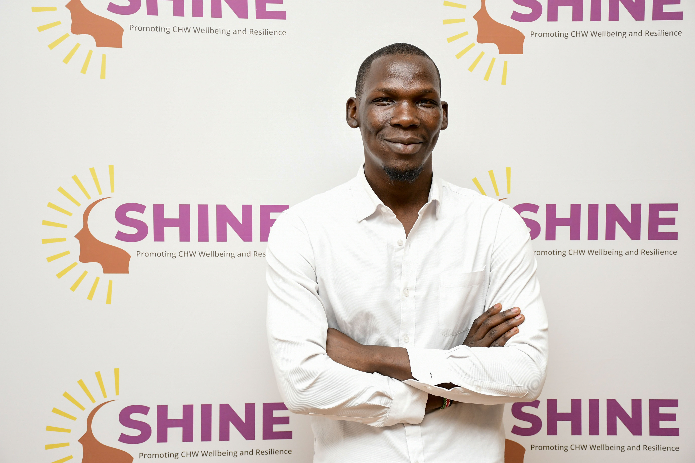

Social Science Researcher | GIS & Environmental Research Specialist
"Turning Research, Spatial Data & Community Knowledge Into Evidence for Better Decisions."
Research professional with experience across public health, WASH, urban development, environmental resource management, GIS, and community-based research in Kenya and East Africa.

B.A. Geography & Environmental Studies (UoN)
Dancan Odiwuor Owaga is a Social Science Researcher with experience designing and implementing qualitative and quantitative research across public health, urban development, WASH (Water, Sanitation, and Hygiene), and community-based projects in Kenya.
His core technical expertise encompasses study protocol development, systematic literature reviews, focus group discussions (FGDs), key informant interviews (KIIs), digital data collection suite configuration (KoboCollect, ODK, SurveyCTO), field team coordination, geospatial mapping, data quality assurance, and high-impact research dissemination.
Dancan has worked across the end-to-end research continuum—from proposal formulation and institutional ethics clearances through rigorous field implementation, geospatial & thematic analysis, to policy briefs and peer-reviewed manuscript development.
Grounding social science metrics with spatial location intelligence (QGIS & ArcGIS).
Engaging informal settlements and local authorities through ethically sound inquiry.
B.A. Geography & Environmental Studies
Social Science & Spatial Research"Transforming research, spatial data, and community knowledge into evidence for better decisions."
Dancan delivers rigorous scientific input across all eight crucial phases of research execution.
Comprehensive skill sets across social research methodologies, spatial analysis, digital data architecture, and stakeholder communication.
Specialized themes addressing pressing social, environmental, and infrastructure challenges across East Africa.
Research related to water security, sanitation infrastructure, hygiene dynamics, and the lived experiences of informal and formal settlement communities across Nairobi and broader urban contexts.
Investigating population health, community health assistant workflows, climate-health intersections, and health system capacity building in collaboration with county administrative officers.
Exploring urban settlement structures, infrastructure accessibility, waste management systems, informal economy pressures, and urban community well-being in rapidly growing municipalities.
Application of geographic concepts, environmental governance frameworks, and spatial tracking to safeguard natural resource systems and support sustainable land-use planning.
Deploying spatial technology, GIS-ORS routing, digitizing administrative boundaries, and building spatial decision-support visualizations for policy-makers and local government stakeholders.
Participatory qualitative inquiry, community inception forums, household-level enumeration, and ethical field engagement ensuring local knowledge informs decision-making.
Documented history of institutional research, project management, and environmental compliance roles.
Key research engagements documented across Dancan's professional affiliations.
Research proposal development and analytical framing focused on the deployment of GIS-ORS (OpenRouteService) spatial optimization models to study urban solid waste management networks.
Multidisciplinary comparative studies analyzing lived water insecurity, sanitation accessibility, and health outcomes across Nairobi's informal and formal urban settlements.
Technical GIS capacity building programs delivered to Kisumu County Officials and Nairobi City County Environmental Officers on spatial data collection and resource mapping.
Large-scale field research encompassing household surveys, Key Informant Interviews, Focus Group Discussions, and bilingual Kiswahili-English translation for community evidence generation.
Visual abstraction representing spatial analysis workflows applied in research context.
Focus: Kibera, Mathare, Mukuru Informal Settlements
A structured six-stage approach to generating actionable, high-quality evidence.
Study protocols, literature reviews, quantitative survey design, qualitative guide framing, and sampling strategies.
Institutional Review Board (IRB) ethics applications, community inception meetings, and field enumerator training.
FGDs, KIIs, household surveys, mobile digital collection tools (Kobo/ODK), and GPS spatial tagging.
Cleaning, validation checks, qualitative verbatim transcription, Kiswahili-English translation, and anonymization.
Qualitative thematic coding (NVivo/ATLAS), statistical modeling (SPSS), and spatial GIS layer mapping.
Peer-reviewed manuscripts, policy briefs, stakeholder workshops, and technical report delivery.
Authors: Foellmer J., Musyoka D., Owaga D., Bockarjova M., Janeka P., Kabaria C., & Anthonj C.
Authors: Foellmer J., Musyoka D., Lebu S., Owaga D., Manga M., Janeka P., Kabaria C., & Anthonj C.
University of Nairobi (UoN)
Specialized in spatial thinking, environmental research, urban environments, natural resource governance, and physical geography.
Native / Professional
Full Professional
Greenlight Academy — Nairobi
Taught Geography, Mathematics, and Science while applying learner-centred approaches and inspiring youth education.
African Population and Health Research Center (APHRC)
Training and Resources in Research Ethics Evaluation (TREE)
Global Consortium on Climate & Health Education
APHRC & Meru University of Science and Technology
Global Mentorship Initiative (GMI)
WASH, Health & Environmental Resources — APHRC
Regional Centre for Mapping of Resources for Development (RCMRD)
Professional principles underlying every research engagement and geospatial survey.
Research should be firmly grounded in empirical qualitative and quantitative evidence, verified through strict data quality assurance protocols.
Research must accurately capture and honor the lived realities and socioeconomic nuances of the communities and environments under study.
Meaningful inquiry prioritizes participatory community involvement, ethical consent, and respectful stakeholder engagement.
Integrating GIS tools unlocks geographic spatial patterns and resource accessibility disparities that traditional data alone might miss.
Maintaining ethical transparency, institutional review compliance, data protection, and research honesty at every stage.
Research outputs should directly translate into policy briefs, decision-making insights, and actionable development programs.
Interested in research collaboration, GIS spatial analysis, environmental research, field data collection, training, or evidence-based development work? Reach out today.